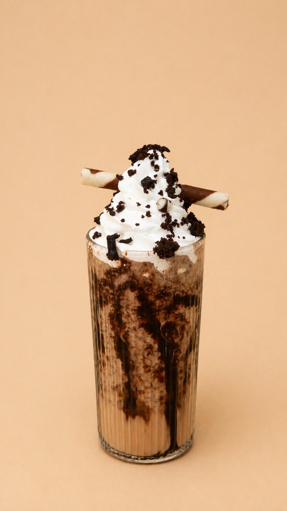

From the sourdough oven
Eight pizzas, two calzones and two panuozzos.
Come for one scoop. Stay for sourdough pizza, a late coffee and something warm from the waffle iron.

Mr Gelato is served inside Krushna’s Heaven, with classics, fruit-forward scoops and richer premium flavours.
Eight pizzas, two calzones and two panuozzos.

Espresso through mocktails, served from morning to late.

Waffles, pancakes, panna cotta and plated desserts.